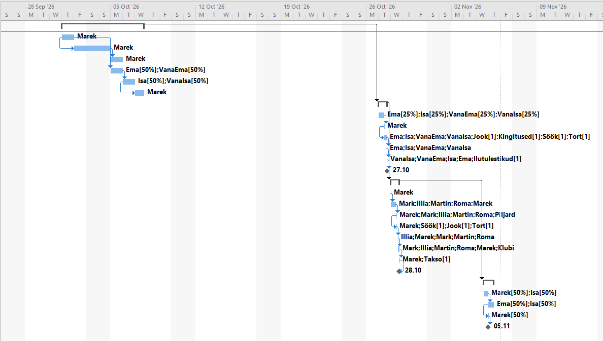
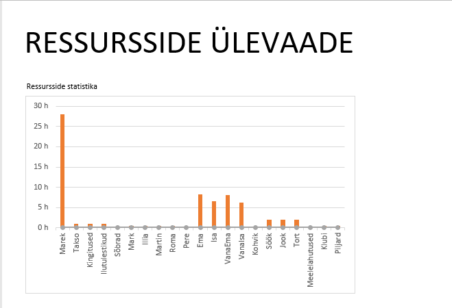
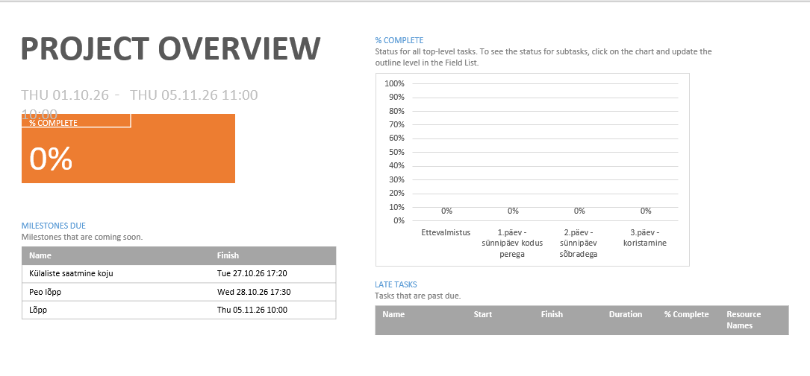

Mis on diagrammid MS Projectis?
Diagrammid on visuaalsed tööriistad, mis aitavad näha "suurt pilti". Kõige tuntum on Gantti diagramm, mis näitab ülesannete ajakava horisontaalselt.

Kuidas diagramme avada?
Mine vahekaardile View. Sealt saad valida erinevaid diagramme nagu Resource Graph (meeskonna koormus) või Network Diagram (tegevuste ahel).

Kuidas need aitavad projekti jälgida?
Diagrammid näitavad kohe, kui mõni ülesanne hilineb või kui ressursid on ülekoormatud. See on parim viis projekti staatuse esitlemiseks.
